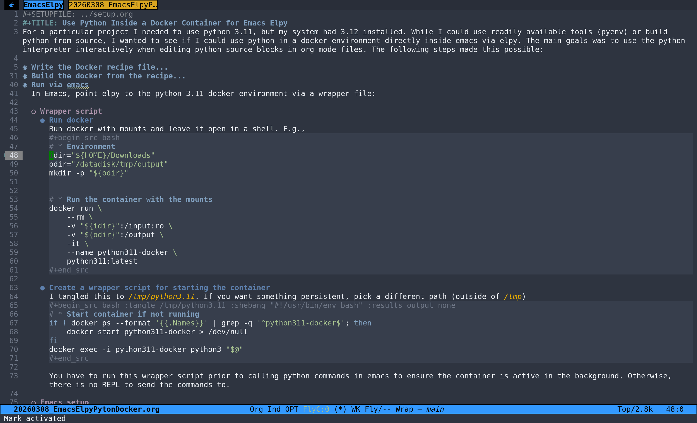

Use Python Inside a Docker Container for Emacs Elpy
Table of Contents
For a particular project I needed to use python 3.11, but my system had 3.12 installed. While I could use readily available tools (pyenv) or build python from source, I wanted to see if I could use python in a docker environment directly inside emacs via elpy. The main goals was to use the python interpreter interactively when editing python source blocks in org mode files. The following steps made this possible:
1. Write the Docker recipe file
I tangled the recipe to /tmp/dockerfile_python311.
# * Use the Python 3.11 slim image
FROM python:3.11-slim
# * Set the working directory
WORKDIR /app
# * Upgrade pip and install packages inside the container
RUN python -m pip install --upgrade pip \
&& pip install \
numpy \
scipy \
nibabel \
nilearn \
neuromaps \
templateflow \
scikit-learn \
ipython
# * Start Python REPL
CMD ["python3"]
2. Build the docker from the recipe
docker \
build \
-t python311 \
-f /tmp/dockerfile_python311 \
.
3. Run via emacs
In Emacs, point elpy to the python 3.11 docker environment via a wrapper file:
3.1. Wrapper script
3.1.1. Run docker
Run docker with mounts and leave it open in a shell. E.g.,
# * Environment
idir="${HOME}/Downloads"
odir="/datadisk/tmp/output"
mkdir -p "${odir}"
# * Run the container with the mounts
docker run \
--rm \
-v "${idir}":/input:ro \
-v "${odir}":/output \
-it \
--name python311-docker \
python311:latest
3.1.2. Create a wrapper script for starting the container
I tangled this to /tmp/python3.11. If you want something persistent, pick a different path (outside of /tmp)
# * Start container if not running
if ! docker ps --format '{{.Names}}' | grep -q '^python311-docker$'; then
docker start python311-docker > /dev/null
fi
docker exec -i python311-docker python3 "$@"
You have to run this wrapper script prior to calling python commands in emacs to ensure the container is active in the background. Otherwise, there is no REPL to send the commands to.
3.2. Emacs setup
Run the following to ensure that the python REPL from the docker is used.
(setq python-shell-interpreter "/tmp/python3.11") (setq python-shell-interpreter-args "-i")
Now I was able to run the desired python configuration inside emacs. To me, this feels much cleaner than having to switch between system wide python versions or building python from source.
3.3. Example

Figure 1: Running Python via Docker with elpy in emacs example